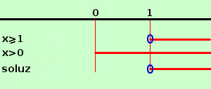

|
y = √logx con log intendiamo il logaritmo naturale (a base e) per l'esistenza della radice dovremo porre il radicando maggiore od uguale a zero logx ≥ 0 per l'esistenza del logaritmo pongo l'argomento maggiore di zero x > 0 ottengo le due condizioni
risolvo: essendo la base e>0 la prima disequazione equivale a x ≥ 1 
faccio il grafico e prendo le soluzioni comuni x ≥ 1 quindi il campo di esistenza e' C.E. = { x ∈ R / x ≥ 1} |